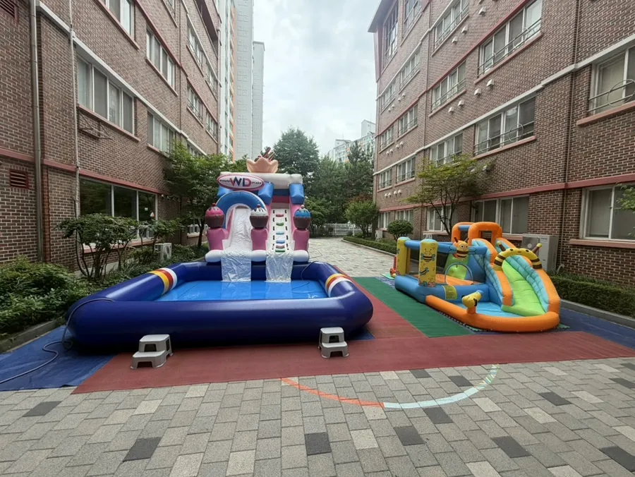

동탄 행사 준비 · 2026년 11월 8일
동탄 유치원 물놀이 행사 준비 — 수영장 · 분수터널 · 안전
동탄 유치원 물놀이 행사 준비는 수영장 크기를 고르기 전에 바닥 상태와 대기 줄, 안전 담당부터 정하는 것이 순서입니다. 물놀이는 즐거움이 큰 만큼 바닥에 물이 생기면 미끄러지기 쉬워서 준비가 부족하면 사고로 이어집니다. 동탄은 행정구역상 화성시 안에 있습니다. F&J 이벤트(펀앤조이 체육교실)는 동탄 유치원 물놀이에서 3x3 수영장과 분수터널, 낚시체험놀이를 세웠고, 그 구성을 바탕으로 준비 순서를 정리했습니다.

- 물놀이 준비는 장소(실내 · 야외)와 바닥 상태부터 확인하고 미끄럼 방지 매트를 깝니다.
- 나이가 어리면 작고 얕은 수영장 위주로, 활동적인 아이들에게는 워터슬라이드를 더하는 식으로 구성합니다.
- 분수터널과 낚시체험처럼 줄을 나눌 수 있는 코너를 두면 대기 시간이 줄어듭니다.
- 슬라이드에는 안전요원 역할의 선생님이 서고 한 명씩 차례를 지키게 합니다.
- 본사(화성시 비봉면)에서 경기 남부 출장으로 동탄까지 갑니다.
1. 동탄 유치원 물놀이 행사 준비, 바닥부터 봅니다
물놀이를 준비할 때 가장 먼저 보는 것은 수영장이 아니라 바닥입니다. 물이 튀면 바닥이 미끄러워져서 아이들이 넘어지거나 크게 다칠 수 있습니다. F&J 이벤트는 물놀이를 세팅할 때 항상 미끄럼 방지 매트를 먼저 깝니다. 동탄은 행정구역상 화성시 안이고 본사(화성시 비봉면)에서 경기 남부 출장으로 갑니다. 장소가 실내인지 야외인지, 바닥이 타일인지 흙인지를 알려 주시면 설치 방법을 정리할 수 있습니다.
| 장소 | 좋은 점 | 미리 볼 것 |
|---|---|---|
| 야외 운동장 · 마당 | 공간이 넓어 슬라이드를 함께 세울 수 있습니다 | 그늘 · 물 마실 곳, 비가 올 때 대체 장소 |
| 실내 강당 | 햇빛과 날씨 걱정이 적습니다 | 바닥 보호, 물 빠짐, 환기 |
| 건물 사이 마당 | 아이들 동선을 짧게 잡을 수 있습니다 | 바닥 경사, 주변 계단 |
2. 수영장은 아이들 나이에 맞춰 고릅니다
동탄 유치원 물놀이에서는 3x3 수영장을 썼습니다. 아이들이 옹기종기 모여 앉아 물장구를 치고 물총놀이를 할 수 있는 작은 수영장이고, 물이 깊지 않아 물을 무서워하는 아이도 놀기 편합니다. 활동적인 아이들이 많거나 인원이 많으면 더 큰 수영장과 워터슬라이드를 함께 세우기도 합니다.
- 3x3 수영장 — 작은 수영장. 어린 아이들이 앉아서 첨벙거리기에 좋습니다.
- 5x5 수영장 + 워터슬라이드 — 슬라이드로 내려와 수영장으로 들어가는 구성.
- 분수터널 — 시원한 물줄기를 통과하며 가운데에서 친구와 사진도 찍을 수 있습니다.
- 낚시체험놀이 — 낚싯대로 물고기 모형을 낚아 보며 집중력과 손의 협응력을 기릅니다.

3. 안전은 매트 · 요원 · 차례, 세 가지입니다
물놀이 안전은 거창하지 않습니다. 바닥에 미끄럼 방지 매트를 깔고, 슬라이드마다 안전요원 역할을 맡은 선생님이 서고, 아이들이 차례를 지키게 하는 것이 기본입니다. 화성 병설유치원 물놀이에서는 선생님들이 슬라이드 옆에서 아이들이 무서워하거나 다칠 수 있는 상황을 지켜보았습니다. 올라간 뒤에는 위에서 뛰지 않고 바로 내려오게 해서 뒤에서 기다리는 친구가 다치지 않게 했습니다.
| 안전 항목 | 확인할 것 | 누가 |
|---|---|---|
| 바닥 | 미끄럼 방지 매트 위치, 물이 고이는 곳 | 설치 팀 + 선생님 |
| 슬라이드 | 한 명씩, 올라가면 바로 내려오기 | 안전요원 선생님 |
| 수영장 가장자리 | 달리지 않기, 모서리에 앉지 않기 | 구역 담당 선생님 |
| 인원 | 한 번에 들어가는 아이 수를 정해 두기 | 행사 담당자 |
| 휴식 | 물 마시기 · 몸 말리기 시간 | 담임 선생님 |
4. 물놀이 코너를 나누면 대기 줄이 줄어듭니다
아이들이 한곳에만 몰리면 줄이 길어져 기다리다 지치고 장난이 생깁니다. 수영장, 분수터널, 낚시체험놀이처럼 성격이 다른 코너를 나란히 두고 반별로 돌아가게 하면 시간이 훨씬 알차게 쓰입니다. 낚시체험은 조용히 집중하는 놀이라 물을 무서워하는 아이들의 쉼터가 되기도 합니다.

- 반을 나눠 코너 순서표를 만듭니다.
- 코너마다 한 번에 들어가는 인원과 시간을 정합니다.
- 코너 사이에 수건 · 물 마시는 시간을 둡니다.
- 마지막에는 전원이 모여 사진을 찍고 정리합니다.
5. 동탄 물놀이 행사 상담은 이렇게
날짜와 장소(실내 · 야외), 아이들 나이와 인원만 알려 주세요. 수영장 크기와 슬라이드, 체험 코너를 정리해 드립니다. 물놀이 장비는 설치와 철수까지 하는 대여가 가능합니다. 행사 · 대여 에서 워터슬라이드와 수영장을 확인하고, 견적 문의 로 요청하세요.
큰 수영장이 필요한 경우는 인천 수영장 대여 · 설치 준비 글도 참고해 보세요.
자주 묻는 질문
물놀이는 실내에서도 할 수 있나요?
실내 물놀이 세팅 기록이 있습니다. 강당 바닥과 물 빠짐 사정에 따라 달라지니 장소 사진이나 크기를 알려 주세요.
슬라이드와 수영장만 빌릴 수 있나요?
네. 워터슬라이드와 수영장은 설치와 철수까지 하는 대여가 가능하고, 진행 인력이 필요하면 함께 구성합니다.
안전요원은 어떻게 하나요?
물놀이에서는 슬라이드마다 안전요원 역할을 맡은 선생님이 섭니다. 인원과 코너 수에 맞춰 상담 때 구성합니다.